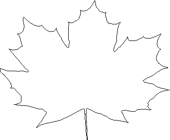

Here are a picture of a maple leaf and a tracing of its outline.
|  |
| First, we cover the right side of the leaf. | |
| Next, we cover the left side of the leaf. |
|
| Then cover the bottom of the leaf. | |
| Finally, cover the bottom of the leaf. |
|
| Here are the IFS rules, and the picture they produce. | |
| First, we adjust the side lobes. | |
| Next, we fill the gap at the upper left. | |
| Now we fill the new gap at the upper left. | |
| Finally, we make a few more adjustments. |
Return to A Fractal Leaf by IFS.